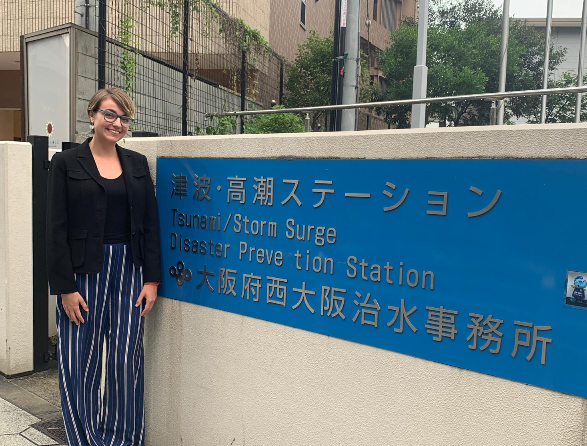

Represented Skills for Chicagoland's Future at Chicago Urban
League's
job fair.
Illinois Tech's Tsunami Preparedness Research Project
Osaka, Japan

I was one of five students chosen to present our
resent research findings to the Osaka Prefecture Government
on June 27, 2019. 21 Illinois Tech students spent the month
of June collecting survey data in Osaka, Japan on foreign
tourists’ disaster preparedness. Our data will help the
government further develop a disaster preparedness app
and
website.